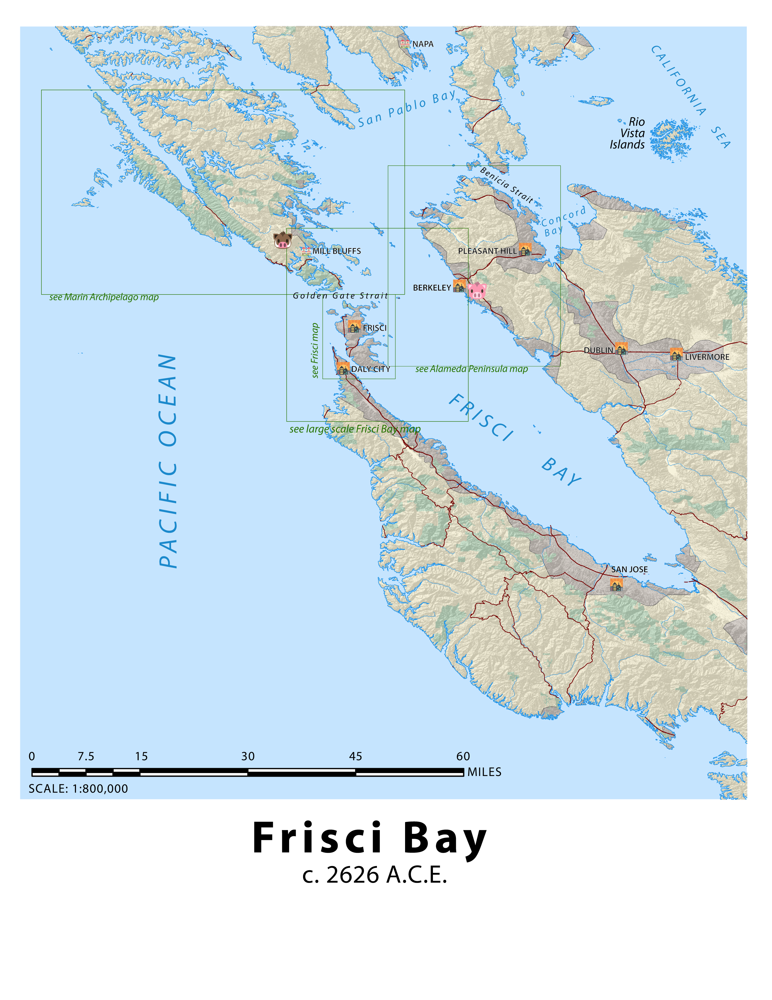
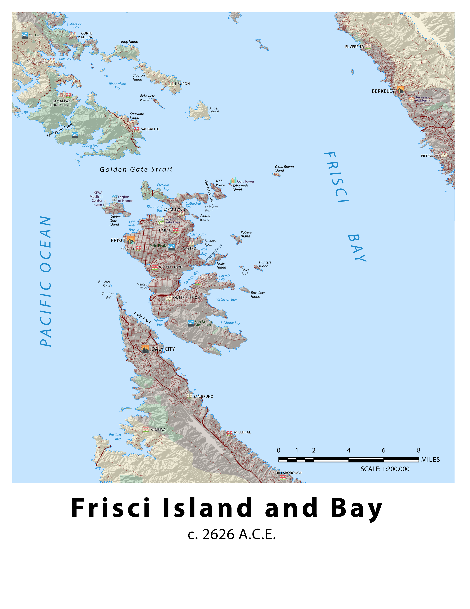

| FANTASY AND NIGHTMARE MAPPING - IDEAS AND CONCEPTS FOR ROLE-PLAYING GAMES |
Frisci Bay - Post-Apocalyptic Bovine California
The following maps show a climate situation that is emphatically not real, yet.
These maps show our world six centuries into the future, after the sea level has risen to recreate the California Sea of prehistoric times. This catastrophic sea level inundation scenario was only made possible by the instantaneous disappearance of homo sapiens sometime in the 23rd century. While it was indeed humans who propelled the Earth into climate chaos, without them, protective infrastrucures like dams were destined to fail.
The wise Bovine Monks of the Sierra Nevadas have some understanding of the cause of the humans' sudden departure; they know intuitively that their souls remain somewhere in the remnants of the internet, which now exists psychedelically in the minds and mutated wetware of all remaining life.
Explore the Frisci Bay as it is inherited by the cats, dogs, pigs, cows, and other creatures of California, who have evolved in their sentience, culture, and coordination after the disappearance of their human masters. Tap into age-old technomagic to uncover the mysteries of the past. Oink!
-----
These four maps represent the beginning of a world-building process, for which I intend to produce many more maps. Discussions with friends will be what fuel further predictions for post-anthrocene history and its impact on the geography in said maps.
 |
 |
|  |  |